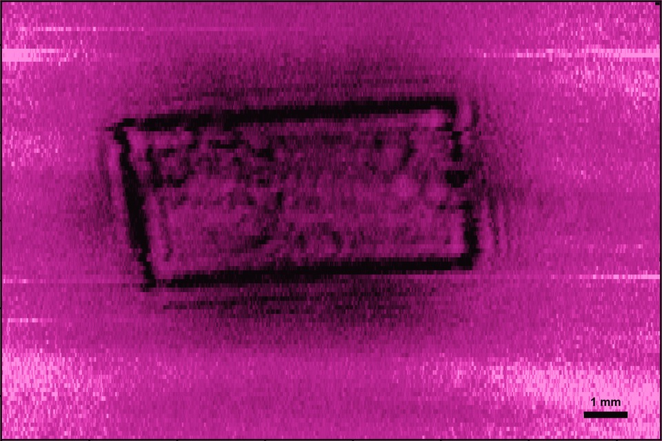
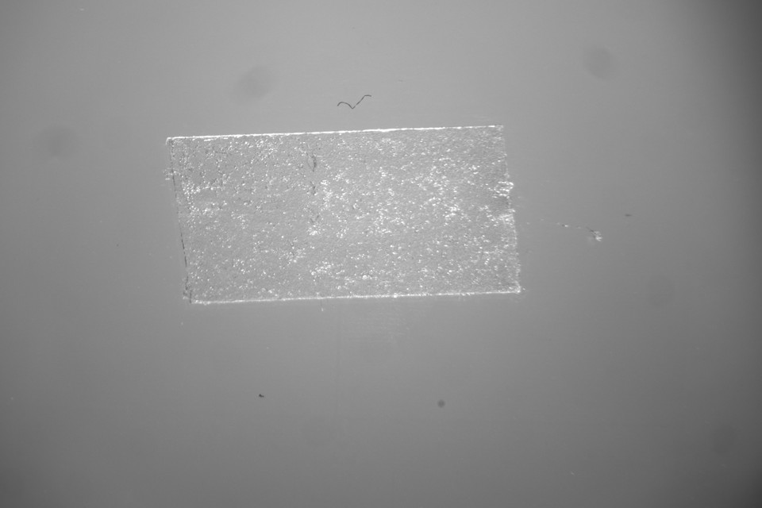
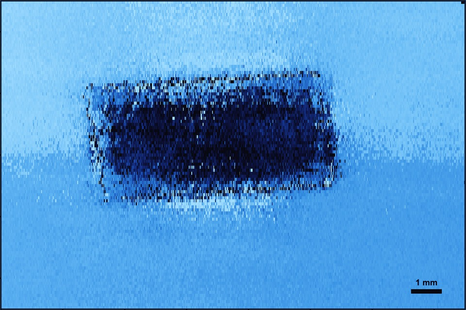

Application
Non-Destructive Testing
Non-contact ultrasonic imaging. See bond quality, defects, and sub-micron thickness variations — no couplant, no gel, no touching the surface.
Bandwidth
Resolution
Required

The Problem
Some Things Can’t Be Touched During Inspection
Hot parts. Moving surfaces. Delicate materials. Sterile environments. Conventional ultrasonic NDT requires couplant — gel, water, or direct contact — that is impractical or impossible in many high-value inspection scenarios.
Couplant-Free
No gel, no water tank, no contact. Inspect through air at standoff distance.
0–5 MHz Bandwidth
Full broadband capture at every scan point. Reconstruct images at any frequency in post-processing.
100 μm Resolution
Point-sensor optical detection. Resolve fine structural features that larger sensors average out.
Capability
Sub-Micron Thickness Mapping
Zero-group-velocity (ZGV) Lamb wave resonances map directly to local plate thickness. BROADSONIC excites these modes and measures their frequency at each scan point, constructing a full-field thickness map with sub-micron sensitivity — completely non-contact.
Measured Result
We scanned a standard microscope slide and measured a 7.4 μm thickness wedge across 20 mm — a 1.3 arcminute tilt, completely invisible to contact methods. Explore the real data below.
Where This Matters
- Semiconductor wafers — thickness uniformity across the wafer
- Battery electrodes — coating thickness consistency
- Display glass — flatness verification
- Composite layups — ply thickness and uniformity
If your process assumes “flat,” you might want to check.
See It In Action
Scanning a Glass Slide for Sub-Micron Thickness Variation
BROADSONIC scans a standard microscope slide point-by-point, exciting ZGV Lamb wave resonances at each position. The resulting thickness map reveals a 7.4 μm wedge across 20 mm — completely invisible to contact methods.
Capability
Adhesive Bond & Contact Inspection
Kissing bonds and partial adhesion are invisible to visual inspection, but they are the root cause of field failures in composites, electronics, and medical devices. BROADSONIC scans reveal the actual contact area — not what the surface looks like, but where acoustic energy is actually transmitted.
What We’ve Demonstrated
Wall tape on a microscope slide — what looks like a simple rectangle to the naked eye reveals edge adhesion, air pockets, and pressure variation. All measured non-contact, from above.



Applications
- Adhesive bond quality verification in composites and laminates
- Spot weld inspection — surface fusion vs. actual joint strength
- Delamination detection in multi-layer structures
- Seal integrity in packaging and medical devices
Advantage
Why Non-Contact Changes Everything
Hot Parts
Inspect components at elevated temperatures where couplant evaporates or contact sensors fail.
Delicate Surfaces
Thin films, coatings, and fragile substrates that cannot tolerate physical contact or fluid.
Inline Automation
No couplant application or cleanup. Compatible with conveyor-speed production inspection.
Sterile & Clean Environments
Medical device manufacturing and semiconductor fabs where contamination from gel or water is unacceptable.
How BROADSONIC Compares for NDT
Conventional Contact Ultrasound
Requires couplant (gel or water) and physical contact. Cannot inspect hot, moving, or delicate parts. Contact pressure affects measurement consistency. BROADSONIC operates entirely through air.
Laser Ultrasonics (Generation + Detection)
High resolution but extremely expensive ($200K+ systems). Generation laser can damage sensitive surfaces. BROADSONIC uses a low-power interrogation laser with no surface damage risk.
Other Air-Coupled Transducers
Conventional air-coupled sensors are narrowband (typically tuned to a single frequency) and have relatively large apertures that limit spatial resolution. BROADSONIC captures 0–5 MHz in a single pass with 100 μm resolution.
Industries
Who Needs This
Aerospace & Composites
Bond inspection, delamination detection, and ply thickness verification in composite structures.
Automotive
Spot weld inspection and adhesive bond verification in body-in-white and battery assembly.
Semiconductors & Electronics
Wafer thickness uniformity, thin-film metrology, and die-attach inspection with no contamination risk.
Medical Devices
Seal integrity, bond verification, and component inspection in sterile manufacturing environments.
Measurement Capabilities
| Detection Bandwidth | 0–5 MHz, broadband, single pass |
| Spatial Resolution | Down to 0.1 mm (100 μm) |
| Contact | None — air-coupled, no couplant |
| Thickness Sensitivity | Sub-micron (demonstrated 7.4 μm over 20 mm) |
| Imaging Modes | C-scan, frequency-selective amplitude maps, ZGV resonance maps |
| EMI Immunity | Complete — fully optical sensor head |
Supporting Research
Non-Contact Characterization of Plates Using a Turbulent Air-Jet Source and an Ultrasound Microphone
Download PDF →Resonant Ultrasound Spectroscopy Detection Using a Non-Contact Ultrasound Microphone
Download PDF →Air-Coupled Ultrasound Using Broadband Shock Waves from Piezoelectric Spark Igniters
Download PDF →Working With Composites, Thin Materials, or Automation?
We’d love to hear what inspection challenges you’re running into. Let’s talk about whether non-contact ultrasonic imaging can solve them.